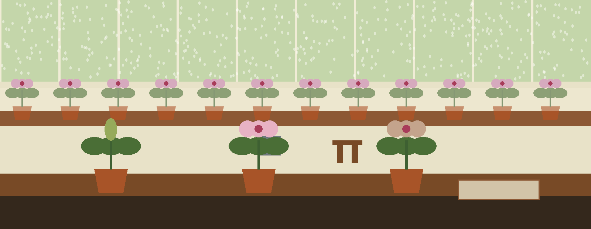
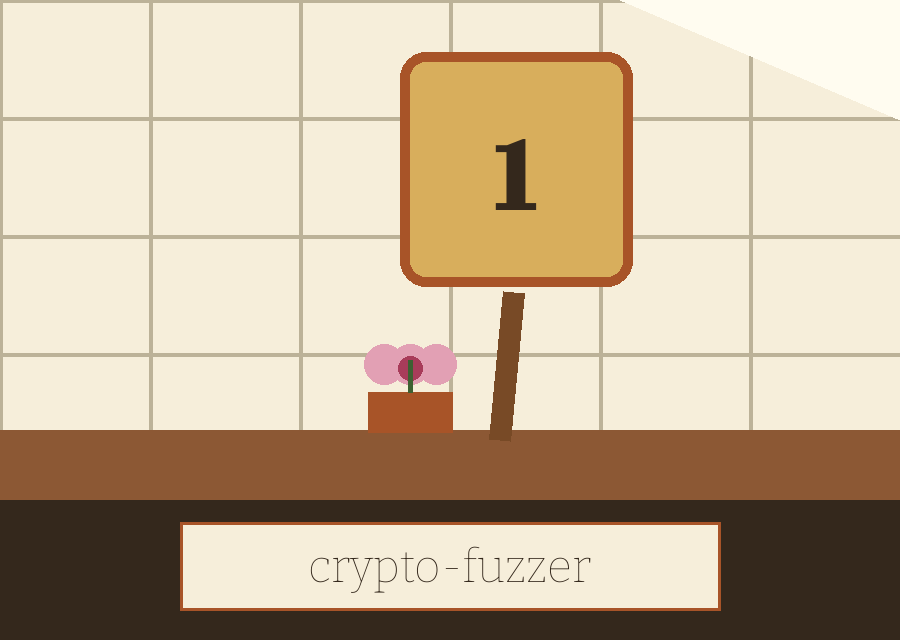
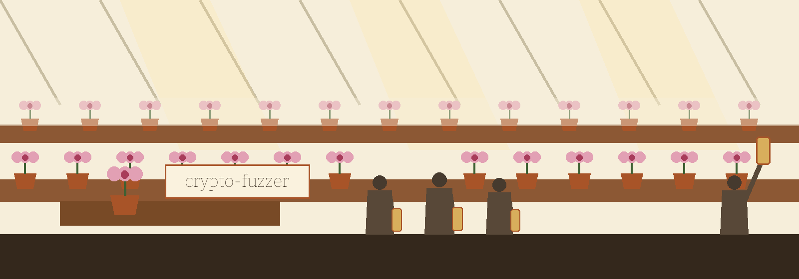

crypto-fuzzer: The Glasshouse Orchid Auction
Theme: The Glasshouse Orchid Auction. Headings in Bigshot One, running text in Bitter.



One Operation Per Run
A caller names one operation. The program runs that operation once in its plain form, then runs a small number of altered forms and logs each result. Four operations are on the catalogue: hash, kdf, encrypt, and decrypt. No other operation is offered. No library is loaded as a target and no external implementation is called; all work happens inside this one file, with the cryptography package beneath it. The working form is python3 main.py --operation, followed by the operation name, followed by the controls that operation needs. Operation is required.
Controls Called in Order
Help, -h, shows a help message and exits. Operation, --operation, takes one of hash, kdf, encrypt, or decrypt. Input, --input, takes the input string, whose role changes by bench. Key, --key, takes the key material for encryption and decryption. Initialisation vector, --iv, takes the vector for those same two benches. Salt, --salt, takes the salt for key derivation. Iterations, --iterations, takes the derivation count, with a default of 10000. Algorithm, --algorithm, names the hashing algorithm, SHA256 by default, with SHA512 as the other named option. Cipher, --cipher, names the cipher, AES by default, with Blowfish as the other named option. Mode, --mode, names the cipher mode, CBC by default, with CFB and CTR named beside it. Tag, --tag, takes the authentication tag for GCM decryption.
One Alteration Per Bench
On the hash bench, input must not be empty, a first digest is taken with the named algorithm, and five altered forms follow, each made by adding one further trailing character; every altered form is digested with SHA256, whatever algorithm was named first. On the derivation bench, derivation is by PBKDF2HMAC with SHA256 in every case, and two altered forms follow, one halving the iteration count and one doubling it. On the encryption bench, one altered form follows, the vector replaced by a fresh random vector of the same length. On the decryption bench, one altered form follows, a single bit in the first byte of the ciphertext flipped.
Judge the Run by Its Log
The encryption bench offers AES and Blowfish with CBC, CFB, and CTR; GCM is not offered there, while the decryption bench alone offers AES with GCM, provided a tag is also supplied. CBC carries no padding step in this code. Key material and vector material are shortened in code to fixed ceilings. The code logs password material, plaintext, and derived or decrypted results in full on the derivation and decryption benches, so a saved log from those benches holds material that must be guarded; no such material, and no digest value, is printed here. Handled faults are logged as errors and set no failure exit code, so readers judge a run by its log, not by its exit status.
Glasshouse Notes
A bench is a raised, slatted table that holds pots clear of the floor so air moves beneath them. A misting line is a pipe with fine nozzles that fogs the air for cuttings and seedlings. A plunge bed is a bed of sand or ash in which pots are sunk to their rims. Shading is wash or blind drawn over roof glass in high summer. Pricking out means lifting seedlings into their first individual pots, and potting on means moving a plant to the next size up.
Record preserved from the README
# crypto-fuzzer
A targeted fuzzer specifically designed to test cryptographic libraries and implementations by generating semi-valid and malformed inputs to uncover edge cases and potential vulnerabilities. - Focused on Basic cryptographic operations
## Install
`git clone https://github.com/ShadowStrikeHQ/crypto-fuzzer`
## Usage
`./crypto-fuzzer [params]`
## Parameters
- `-h`: Show help message and exit
- `--operation`: The cryptographic operation to fuzz.
- `--input`: The input string to fuzz.
- `--key`: The key to use for encryption/decryption.
- `--iv`: No description provided
- `--salt`: The salt to use for KDF.
- `--iterations`: The number of iterations for KDF. Default: 10000
- `--algorithm`: Hashing algorithm to use. Options: SHA256, SHA512. Default: SHA256
- `--cipher`: Cipher algorithm to use. Options: AES, Blowfish. Default AES
- `--mode`: Cipher mode to use. Options: CBC, CFB, CTR. Default CBC
- `--tag`: No description provided
## License
Copyright (c) ShadowStrikeHQ
Facts from the code, stated in the prose
This record names: hash, kdf, encrypt, decrypt, --operation, --input, --key, --iv, --salt, --iterations, --algorithm, --cipher, --mode, --tag, PBKDF2HMAC, SHA256, SHA512, AES, Blowfish, CBC, CFB, CTR, GCM, 10000, python3 main.py, cryptography.